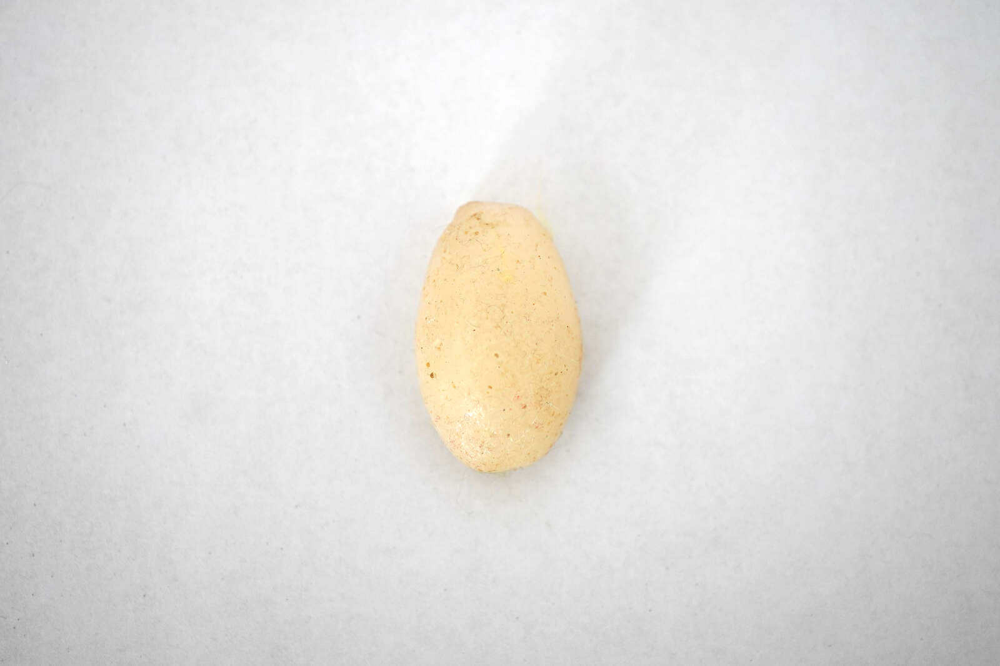

pedra de leite / milk stone
Pedra de leite [natália, julieta & ovelhas anônimas], 2021
3 x 2 cm
Uma pedra de leite [resina e leites humanos e extrahumanos] esculpida [moldada] no formato de minha primeira pedra na vesícula em um procedimento análogo ao da gravidez.
Milk stone [natalia, julieta & anonymous sheep], 2021
3 x 2 cm
A milk stone [resin and human and extrahuman milks] carved [molded] into the shape of my first gallbladder stone in a procedure analogous to pregnancy.
